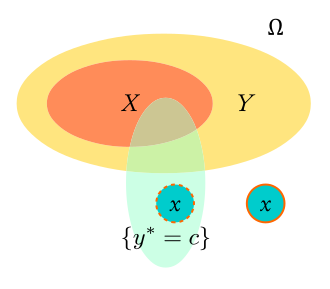

Special Notes on Nov. 19, 2018
| Date: | Nov 19, 2018 |
|---|---|
| Last Updated: | Jan 28, 2019 |
| Categories: | |
| Tags: |

Contents
Theory of Lovasz extension
The Lovasz extension is proposed to form an interpolating function for a sub-modular set function. In this article, we are discussing about the theory and the results from this paper: “The Lovász-Softmax loss: A tractable surrogate for the optimization of the intersection-over-union measure in neural networks”,
To get more details, we have the further reading material about Lovasz-hinge optimization: “The Lovász Hinge: A Novel Convex Surrogate for Submodular Losses“
In application, we usually use binarized prediction to evaluate the efficiency or accuracy. Therefore, in general, our training loss function (usually to be the cross-entropy) is different from the evaluation. By applying such method, we could make the binary function transformed into an interpolated version, so that we could optimize the binary function directly.
To show how the interpolation works, we use a specific binary function as the example. Denote that $f(\mathbf{b}(x))$ accepts a prediction value $x \in (-2,~2)$, where $\mathbf{b}(x)$ outputs a binary vector like $[0,~1,~0]$. Then we could define that $f$ outputs the sum of $\mathbf{b}$, and $f$ is a binary function because its direct input is a binary vector.
If we calculate $\frac{\partial f}{\partial x}$, we would find that only in countable points there is the gradient (theoretically the gradient is impulse function), which means in most cases, the gradient of $f$ is 0. So such a binary function could not be optimized. However, if we interpolate the function by some specific methods, we could get a smooth line. Since the interpolated function is derivable at any point, we could optimize over the interpolated function.
| Compare the binary function and its interpolation |
|---|
| Compare the gradient from the binary function and its interpolation |
|---|
Here Lovasz extension is exactly such a tool that helps us interpolate a set function (whose input is binary) as a derivable function.
Problem statement
Jaccard index
Check here to see Jaccard index in Wikipedia.
In this topic, we are discussing how to interpolate the Jaccard index function properly. The Jaccard index (also called intersection over union (IoU)) is a set function. Denote Jaccard index as $J(\hat{\mathbf{y}},~\mathbf{y}^{\ast})$, where both $\hat{\mathbf{y}}$ and $\mathbf{y}^{\ast}$ are vectors with a length of $p$. Furthermore, $\hat{\mathbf{y}} \in \{0,~1\}^p$ is the prediction and $\mathbf{y}^{\ast} \in \{0,~1\}^p$ is the ground truth. Then we could define $J$ as
where $c$ represents a specific class in multi-class segmentation problem.
Note that if we define the mismatch as $\mathbf{M}_c = \{ \hat{\mathbf{y}}=c ,~ \mathbf{y}^{\ast} \neq c \} \cup \{ \hat{\mathbf{y}} \neq c ,~ \mathbf{y}^{\ast}=c \}$. Then the Jaccard index could also be represented as
We use the following example to show how we define Jaccard index which means the intersection area size divided by union area size.
| The example of definition of Jaccard index |
|---|
The requirements of the interpolation
To develop a derivable interpolation for Jaccard index, the designed function need to fulfil such conditions:
- In the whole data space, there is only countable points where the interpolation is not derivable.
- If we input binary vector to the interpolation, the result should be the same of that from the original set function.
In the following parts, we would show how to calculate Lovasz extension, and how Lovasz extension fulfil these requirements.
Sub-modular set function
Check here to see sub-modular set function in Wikipedia.
Here we define the sub-modular set function. Although there are multiple definitions to confirm whether a set function is sub-modular, here we only take one definition.
Definition 1: sub-modular set function
For a set function $\Delta:~ \{0,~1\}^p \rightarrow \mathbb{R}$, if it is sub-modular, then for any two input set $\mathbf{a}$ and $\mathbf{b}$, it has\begin{align} \label{fml:submodu1} \Delta (\mathbf{a}) + \Delta (\mathbf{b}) \geqslant \Delta (\mathbf{a} \cup \mathbf{b}) + \Delta (\mathbf{a} \cap \mathbf{b}). \end{align}
To understand what is sub-modular function, we could view the function value as the efficacy. A function is sub-modular means with the expansion of the input set, the increment of the gained efficacy declines.
Proof of the sub-modularity of complementary Jaccard index function
Here we would prove that the complementary Jaccard index function which is defined by $\eqref{fml:compjac}$ is a sub modular function.
According to the definition in Wikipedia, we could find a equivalent definition for $\eqref{fml:submodu1}$:
Definition 2: sub-modular set function (Alternative)
For every $X, Y \subseteq \Omega$ with $X \subseteq Y$ and every $\{ x\in \Omega \setminus Y\}$ we have that\begin{align} \label{fml:submodu2} \Delta(X\cup {x})-\Delta(X) \geqslant \Delta(Y\cup {x})-\Delta(Y). \end{align}
This definition could be illustrated in the figure below. We use $X$ to represent $\{\hat{\mathbf{y}}_X=c\}$, $Y$ to represent $\{\hat{\mathbf{y}}_Y=c\}$. Then we could infer that $X$ and $Y$ are two different predictions, and $X$ is a smaller set compared to $Y$. And we also show a set representing the ground truth (label), $\{\mathbf{y}^{\ast}=c\}$.
| The alternative definition for submodular set function |
|---|
|  |
We could find that there are two cases for the position of the new element $x$. While $X$ is smaller than $Y$, $x$ should be outside both $X$ and $Y$. In the first case, $x$ is inside the set $\{\mathbf{y}^{\ast}=c\}$. So according to the defintion, $\mathbf{M}_c(X \cup x) = \mathbf{M}_c(X)$ (also for $Y$). Since $\mathbf{M}_c$ does not change, we could get the equality in $\eqref{fml:submodu2}$.
In the other case, $x$ is outside $\{\mathbf{y}^{\ast}=c\}$, which means adding a new element $x$ would expand $\mathbf{M}_c$, and $\mathbf{M}_c(X \cup x) = \mathbf{M}_c(X) + 1$ (also for $Y$). Then we could get the function:
Because $\{\mathbf{y}^{\ast}=c\}$ is fixed, when $\mathbf{M}_c(X)$ expands, the complementary set $\overline{\mathbf{M}_c(X)}$ would reduce. Then we find that in the above equation, the numerator declines and denominator increases. Both of the changes would make $f(X)$ declines with the expansion of $X$. Thus we know $f(X) \geqslant f(Y)$, which means $\Delta(X\cup {x})-\Delta(X) \geqslant \Delta(Y\cup {x})-\Delta(Y)$.
Proof of Lovasz extension
Definition
For a specific class $c$, denote that we have $p$ samples in the whole set, then we could use $\mathbf{y} \in \mathbb{R}^p$ and $\mathbf{y}^{\ast} \in \{0,~1\}^p$ to represent the prediction and the ground truth respectively. Therefore, we could find that we use $\{0,~1\}$ to show whether a sample belongs to this class.
Denote the misfit function as $\mathbf{m}(\mathbf{y}, \mathbf{y}^{\ast}) \in \mathbb{R}^P$. This function should fulfil that for any element $i$,
Then we could calculate the misfit $\mathbf{m}$ for each element. Sort the misfit in descending order, we would get a resorted list of the original set, i.e. there is a set $\{\pi_1,~\pi_2,~\ldots,~\pi_p\}$ that ensures $m_{\pi_1} \geqslant m_{\pi_2} \geqslant \ldots \geqslant m_{\pi_p}$.
Denote the gradient function as $g$, and let the complementary Jaccard index function $\Delta_c(\mathbf{0}) = 0$, then we have
Therefore we have
Definition 3: Lovasz extension
Define the Lovasz extension for $\Delta_c : \{0,~1\}^p \rightarrow \mathbb{R}$ is $\bar{\Delta}_c : \mathbb{R}^p \rightarrow \mathbb{R}$, then we have\begin{align} \label{fml:lovasz} \bar{\Delta}_c = \sum_{i=1}^p m_{\pi_i} g_{\pi_i}. \end{align}
Proof for requirement 1
Then let us check why this extension is the interpolation for the original set function. First, let us check the first requirement. For any index $i$, we could find a $\pi_j$ that has $i = \pi_j$. Then we could find that
Apparently, according to $\eqref{fml:gradientlovasz}$, $g_{\pi_j}$ is a linear combination of two set function. Because each set function has no gradient, $\frac{ \partial g_{\pi_j} }{ \partial y_{\pi_j} } = 0$. Then we know that
First, $g_{\pi_j}$ is a real value function, and $m_{\pi_j}$ is a pre-defined misfit function, which is derivable at any point, so we could find that $\bar{\Delta}_c$ is derivable at any point except some countable points. Note that at those countable points, $g_{\pi_j}$ changes, so $\frac{ \partial g_{\pi_j} }{ \partial y_{\pi_j} } \rightarrow \infty$. Although in some cases $\bar{\Delta}_c$ is not derivable, these cases are countable, so the requirement 1 is still fulfilled.
Proof for requirement 2
Now let us check the second requirement. Because $\{m_{\pi_i} | m_{\pi_i} \in \{0,~1\}\}$ is sorted in the descending order, we could know that $\exists l$, for any $i \leqslant l$, we have $m_{\pi_i} = 1$. For any $i > l$, we have $m_{\pi_i} = 0$. Therefore, $\eqref{fml:lovasz}$ could be rewrited as
&= \Delta_c ({\pi_1,~\pi_2,~\ldots,~\pi_l}) - \Delta_c(\mathbf{0}) = \Delta_c ({\pi_1,~\pi_2,~\ldots,~\pi_l}). \end{aligned} \end{equation}
For any $i > l$, since $m_{\pi_i}=0$, which means $y_i = y^{\ast}_i$, we could know that for any set $X$, $\mathbf{M}_c (X \cup \pi_i) = \mathbf{M}_c (X)$. Because both $\mathbf{M}_c$ and $\{\mathbf{y}^{\ast}=c\}$ does not change, there would be $\Delta_c (X \cup \pi_i) = \Delta_c (X)$. Hence we have
The left side of this equation is the original set function, and the right side of this equation is the Lovasz extension. Because they equal to each other, we could verify that the requirement 2 is fulfilled.
Improved algorithm for Jaccard index
The equation $\eqref{fml:lovasz}$ is enough for us to calculate the interpolation for the set function. But in many cases, this method is still not practicable. To be specific, when $i > l$ in $\eqref{fml:rq2prof}$, we could find that the Lovasz extension would not be influenced by the samples which match the labels. In other words, there would be some cases that Lovasz extension does not have any gradient, which makes the loss function unable to be optimized.
Here we show the improved algorithm for solving this problem.
| Improved algorithm for calculating Lovasz extension gradient |
|---|
There are two ideas lying in this algorithm:
The values of errors $\mathbf{m}$ are not used to calculate the gradient, but they could exert their influence to the gradient (cumulative sums) by adjusting the order of the foreground pixels.
For any $i$, if the cumulative sum for $\delta_{\pi_i}$ does not increase, then the cumulative sum for $1 - \delta_{\pi_i}$ would increase. So for each $i$, the value in the gradient vector would change.
Apparently, because in this algorithm, we do not change the calculation for $\eqref{fml:lovasz}$, the first requirement is still fulfilled. However, since we change the method for calculating the gradient, we need to prove that the second requirement still holds.
Inspecting on the algorithm, we could find that in Step 5, we are calculating the equivalent $\Delta_c$. After this step, we are calculating the gradient for $\bar{\Delta}_c$ like what we do in $\eqref{fml:gradientlovasz}$. Denote the matrix $\mathbf{S}$ as
Then we can define the cumulative sum for a vector $\mathbf{x}$ as $\mathbf{Sx}$. According to the algorithm, we could rewrite the equivalent $\Delta_c$ as
To prove the requirement 2, we could still assume that the predicted value is 0 or 1. Then we could compare this rewritten version to $\eqref{fml:compjac}$ in two cases. Recall the definition in requirement 2, we divide the sorted vector $\boldsymbol{\delta}_{\boldsymbol{\pi}}$ into two parts:
$i \leqslant l$, which means for each $i$, $m_i = 1$. In this case, every time $i$ increases, because $m_i = 1$, $|\mathbf{M}_c|$ increases by 1, and the cumulative sum $\mathbf{S} \boldsymbol{1}$ would also increase by 1. So we have $|\mathbf{M}_c|=\mathbf{S} \boldsymbol{1}$. For the denominator, because $m_i = 1$ always holds, only when $\delta_{\pi_i} = 0$, which means the label shows 0, both $\mathbf{S} (1 - \boldsymbol{\delta})$ and $\left| \{ \mathbf{y}^{\ast}=c \} \cup \mathbf{M}_c \right|$ increases. Therefore, $\sum(\boldsymbol{\delta}) + \mathbf{S} (1 - \boldsymbol{\delta}) = \left| \{ \mathbf{y}^{\ast}=c \} \cup \mathbf{M}_c \right|$. Thus $\Delta_c = \Delta_{c\mathrm{Alg}}$.
$i > l$, which means for each $i$, $m_i = 0$, since $\mathbf{M}_c$ does not change, $\Delta_c$ would also be unchanged, which means the gradient would be 0 according to such calculation. However, for $\Delta_{c\mathrm{Alg}}$, the numerator would keep increasing for each $i$. And for the denominator, $\mathbf{S} (1 - \boldsymbol{\delta})$ would also increase when $\delta_{\pi_i}=0$. Note that because the denominator is always larger than numerator, $\Delta_{c\mathrm{Alg}}$ would keep increasing for each $i$, which ensures that $\Delta_c$ is still submodular.
Then, we would find that when $m_i = 1$, $\Delta_c = \Delta_{c\mathrm{Alg}}$, which means the gradients are also the same. When $m_i = 0$, although $\Delta_c \neq \Delta_{c\mathrm{Alg}}$, $\bar{\Delta}_c$ does not be influenced, because we can formulate the Lovasz extension for both methods (direct calculating and using algorithm):
Examples
Denote that labels $\boldsymbol{\delta} = \{ \mathbf{y}^{\ast}=c \}$ and logits $\mathbf{p} = \{ \hat{\mathbf{y}}=c \}$, then we give such an example:
| $\boldsymbol{\delta}$ | 1 | 0 | 0 | 1 | 1 | 0 | 0 | 1 | 1 | 1 | 0 |
|---|---|---|---|---|---|---|---|---|---|---|---|
| $\mathbf{p}$ | 1 | 1 | 0 | 0 | 1 | 1 | 0 | 1 | 1 | 0 | 1 |
Example of deriving a Lovasz extension with the plain theory
Because the predicted value $p_i \in \{0,~1\}$, there is $\mathbf{M}_c=\mathbf{m}$, then we have:
| $\boldsymbol{\delta}$ | 1 | 0 | 0 | 1 | 1 | 0 | 0 | 1 | 1 | 1 | 0 |
|---|---|---|---|---|---|---|---|---|---|---|---|
| $\mathbf{p}$ | 1 | 1 | 0 | 0 | 1 | 1 | 0 | 1 | 1 | 0 | 1 |
| $\mathbf{M}_c$ | 0 | 1 | 0 | 1 | 0 | 1 | 0 | 0 | 0 | 1 | 1 |
| $\pi_i$ | 6 | 1 | 7 | 2 | 8 | 3 | 9 | 10 | 11 | 4 | 5 |
The last row of the table shows the index of sorted vectors. In the following table, each time $i$ increases, a new element $\pi_i$ would be added to $\mathbf{M}_c$. Note that $\boldsymbol{\delta}$ does not change with $i$:
| $\pi_i$ | 1 | 2 | 3 | 4 | 5 | 6 | 7 | 8 | 9 | 10 | 11 |
|---|---|---|---|---|---|---|---|---|---|---|---|
| $|\mathbf{M}_c|$ | 1 | 2 | 3 | 4 | 5 | 5 | 5 | 5 | 5 | 5 | 5 |
| $|\boldsymbol{\delta} \cup \mathbf{M}_c|$ | 7 | 7 | 8 | 8 | 9 | 9 | 9 | 9 | 9 | 9 | 9 |
| $\Delta_c$ | 1/7 | 2/7 | 3/8 | 4/8 | 5/9 | 5/9 | 5/9 | 5/9 | 5/9 | 5/9 | 5/9 |
| $\mathbf{m}$ | 1 | 1 | 1 | 1 | 1 | 0 | 0 | 0 | 0 | 0 | 0 |
| $\bar{\Delta}_c$ | 1/7 | 2/7 | 3/8 | 4/8 | 5/9 | 5/9 | 5/9 | 5/9 | 5/9 | 5/9 | 5/9 |
Example of deriving a Lovasz extension with the improved algorithm
First, calculate the order of sorted vectors:
| $\boldsymbol{\delta}$ | 1 | 0 | 0 | 1 | 1 | 0 | 0 | 1 | 1 | 1 | 0 |
|---|---|---|---|---|---|---|---|---|---|---|---|
| $1-\boldsymbol{\delta}$ | 0 | 1 | 1 | 0 | 0 | 1 | 1 | 0 | 0 | 0 | 1 |
| $\mathbf{p}$ | 1 | 1 | 0 | 0 | 1 | 1 | 0 | 1 | 1 | 0 | 1 |
| $\mathbf{m}$ | 0 | 1 | 0 | 1 | 0 | 1 | 0 | 0 | 0 | 1 | 1 |
| $\pi_i$ | 6 | 1 | 7 | 2 | 8 | 3 | 9 | 10 | 11 | 4 | 5 |
When using algorithm, the numerator would increases for each $\pi_i$ and the denominator would increase when $\delta_{\pi_i}=0$. Because $\sum (\boldsymbol{\delta})=6$, we have
| $\pi_i$ | 1 | 2 | 3 | 4 | 5 | 6 | 7 | 8 | 9 | 10 | 11 |
|---|---|---|---|---|---|---|---|---|---|---|---|
| $1-\boldsymbol{\delta}$ | 1 | 0 | 1 | 0 | 1 | 0 | 1 | 0 | 1 | 0 | 0 |
| $\mathbf{S} \boldsymbol{1}$ | 1 | 2 | 3 | 4 | 5 | 6 | 7 | 8 | 9 | 10 | 11 |
| $\sum(\boldsymbol{\delta}) + \mathbf{S} (1 - \boldsymbol{\delta})$ | 7 | 7 | 8 | 8 | 9 | 9 | 10 | 10 | 11 | 11 | 11 |
| $\Delta_{c\mathrm{Alg}}$ | 1/7 | 2/7 | 3/8 | 4/8 | 5/9 | 6/9 | 7/10 | 8/10 | 9/11 | 10/11 | 11/11 |
| $\mathbf{m}$ | 1 | 1 | 1 | 1 | 1 | 0 | 0 | 0 | 0 | 0 | 0 |
| $\bar{\Delta}_c$ | 1/7 | 2/7 | 3/8 | 4/8 | 5/9 | 5/9 | 5/9 | 5/9 | 5/9 | 5/9 | 5/9 |
Misfit function
In the above discussion, we need to calculate misfit (error) vector $\mathbf{m}$. The element of misfit need to satisfy such a condition: $m_i \in [0,~1]$. We could use different functions to calculate the misfit as long as the function could fulfil the above condition. Denoting $\hat{\mathbf{y}}$ as the logits and $\mathbf{y}^{\ast}$ as the labels, here we introduce some misfit functions:
Linear/L1: $\mathbf{m} = \left| \hat{\mathbf{y}} - \mathbf{y}^{\ast} \right|$.
Trigonometric: $\mathbf{m} =1 - \cos \left(\frac{\pi}{2} \left( \hat{\mathbf{y}} - \mathbf{y}^{\ast} \right) \right)$.
Square/L2: $\mathbf{m} = \left( \hat{\mathbf{y}} - \mathbf{y}^{\ast} \right)^2$.
Approximate cross entropy: $\mathbf{m} =- \mathbf{y}^{\ast} \times \log_{10}(0.1 + \hat{\mathbf{y}}) - (1 - \mathbf{y}^{\ast}) \times \log_{10}(1.1 - \hat{\mathbf{y}})$.
Note that the last function has small derivation, which does not influence the optimization.
Testing results
Check the validity of interpolation
In this example, we set the labels and logits as:
| labels | y* | 0 | 1 | 1 | 0 |
|---|---|---|---|---|---|
| logits | y | 0 | 1 | 0 | 1 |
which means we vary the label and logit of the first sample and record the value of the Jaccard index. The function $J(y,~y^{\ast})$ is plotted in the figure below:
In this figure, we use y and y* as the variable parameter and the value of the function as the z axis.
Using different functions to calculate the misfit, we may get different features for the interpolation. For example, if we use linear function to calculate the misfit, we would get:
In the above figure, we compare the results from the algorithm and the direct computing. We would find that although both methods could fulfil the two requirements, we could get gradient every where if we use the algorithm version. However, if we compute the interpolation by the theory directly, in some cases the gradient would vanish.
This figure shows the results when we use the cross entropy as the misfit. Since the cross entropy function makes the optimization for small value more important, it would be more capable in practical problems.
Handle specific cases
In these examples, we fix the labels and vary the logits to examine the interpolation with the cross entropy misfit. Denote that the parameters are y1 and y2, then we have
| labels | 1 | 1 |
|---|---|---|
| logits | y1 | y2 |
The result is
In the second example, we use different labels, and we have
| labels | 0 | 0 |
|---|---|---|
| logits | y1 | y2 |
The result is
Reproduce the results from the paper
In the following parts, we are trying to reproduce the results in the original paper. And we have succeeded in realizing the Lovasz-softmax and Lovasz-hinge loss functions with the configuration in the paper. To learn more about the two examples, check the paper to see the configurations.
Lovasz-softmax loss
Lovasz-hinge loss
Source codes
The source code of this inspection has been uploaded to Github, to learn more about the codes, please check the following link: